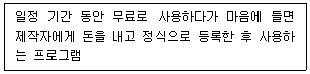
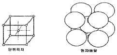

침투비파괴검사기능사 (2011-04-17 기출문제)
1과목: 침투탐상시험법(대략구분)
1. 자분탐상시험을 프로드법으로 적용할 때 자화전류값은 무엇에 따라 결정되는가?
- 프로드전극의 직경과 시험체의 두께
- 프로드 전극 사이의 거리와 시험체의 두께
- 프로드 재질과 프로드 전극 사이의 거리
- 시험체의 층 길이와 프로드 전극의 반지름
(정답률: 63%)

2. 다음 중 와전류탐상시험에서 와전류의 분포 및 강도의 변화에 영향을 주는 인자와 가장 거리가 먼 것은?
- 시험체의 전도도
- 시험체의 크기와 형태
- 접촉 매질의 종류와 양
- 코일과 시험체 표면사이의 거리
(정답률: 33%)
3. 다음 중 자분탐상 시험방법만으로 조합된 것은?
- 반사법과 공진법
- 투과법과 건식법
- 극간법과 코일법
- 내삽법과 프로드법
(정답률: 75%)
4. 다음 중 비금속재료에 대한 비파괴검사를 실시하기에 적합하지 않은 시험 방법은?
- 방사선투과시험
- 초음파탐상시험
- 자분탐상시험
- 침투탐상시험
(정답률: 80%)
5. 다음 중 자연광에서 검사가 가능한 침투탐상시험법은?
- 용제제거성 염색침투탐상시험법
- 수세성 형광침투탐상시험법
- 후유화성 형광침투탐상시험법
- 용제제거성 형광침투탐상시험법
(정답률: 77%)
6. 방사선투과시험법에서 투과도계를 사용하는 주 목적은?
- 식별도를 측정하기 위함이다.
- 필름 입상성을 측정하기 위함이다.
- 필름 콘트라스트를 측정하기 위함이다.
- 용제제거성 형광침투탐상시험법
(정답률: 30%)
7. 다음 중 초음파탐상시험으로 알기 어려운 것은?
- 결함 모양과 형태
- 결함의 위치
- 시험편 두께
- 결정입자의 크기 정도
(정답률: 14%)
8. 방사선투과시험이 곤란한 납과 같이 비중이 높은 재료의 내부 결함 검출에 가장 적합한 검사법은?
- 적외선시험(IRT)
- 음향방출시험(AET)
- 와전류탐상시험(ET)
- 중성자투과시험(NRT)
(정답률: 67%)
9. 다음 방사선투과시험에 사용하는 감마선원 중 반감기가 가장 긴 것은?
- Co-60
- Cs-137
- Ir-192
- Tm-170
(정답률: 28%)
10. 다음 중 침투탐상시험에서 쉽게 찾을 수 있는 결함은?
- 표면결함
- 표면 밑의 결함
- 내부결함
- 내부기공
(정답률: 79%)
11. 다음 중 비파괴검사에 대한 설명으로 옳은 것은?
- 비파괴검사는 시험절차서에 따라 실시할 필요는 없다.
- 비파괴검사는 시험대상물을 절삭하고 파괴하는 것을 허용하고 있다.
- 비파괴검사는 적절한 시험방법을 선택하면 재료, 부품, 구조물 등의 종류에 상관없이 적용 가능하다.
- 비파괴검사는 일정한 자격을 소지한 기술자가 장비의 선택 없이 한가지 검사로 모든 시험을 하여야 한다.
(정답률: 79%)
12. 와전류탐상시험의 장점에 대한 설명으로 틀린 것은?
- 결과의 기록보존이 가능하다.
- 고온, 고압의 조건에서도 탐상이 가능하다.
- 두꺼운 재료의 내부결함 검사에 효과적이다.
- 비접촉법으로 시험속도가 빠르고 자동화가 가능하다.
(정답률: 58%)
13. 다음 비파괴검사법 중 시험체 내부 깊은 결함을 검출할 수 있는 것으로만 짝지어진 것은?
- 자분탐상시험, 침투탐상시험
- 초음파탐상시험, 자분탐상시험
- 침투탐상시험, 방사선투과시험
- 방사선투과시험, 초음파탐상시험
(정답률: 78%)
14. 금속재료의 결함탐성에 일반적으로 사용되는 초음파탐상시험의 주파서 범위에 해당되는 것은?
- 0.5 KHz
- 1 KHz
- 20 KHz
- 2 MHz
(정답률: 47%)
15. 침투탐상시험에서 후유화성과 수세성의 차이를 구별하는 가장 주된 내용은?
- 물이 포함되어 있는지의 여부
- 알루미늄 합금에 사용할 수 있는지의 여부
- 침투액에 유화제가 포함되어 있는지의 여부
- 현상하기 전 표면의 과일침투액 제거 필요 여부
(정답률: 74%)
16. 다음 중 자외선조사장치에 사용되는 수은등에서 발생되는 광선과 거리가 먼 것은?
- X-선
- 적외선
- 자외선
- 가시광선
(정답률: 56%)
17. 수세성 침투액과 습식현상제를 사용할 경우 침투탐상장치의 순서로 옳은 것은?
- 전처리대→현상대→침투조→세척조→건조대→관찰대
- 전처리대→침투조→세척조→건조대→현상조→관찰대
- 전처리대→침투조→세척조→현상조→건조대→관찰대
- 전처리대→침투조→현상조→세척조→건조대→관찰대
(정답률: 42%)
18. 후유화성 형광침투액과 건식현상제를 사용하여 침투탐상 검사를 할 경우 올바른 시험 절차는? (단, 관찰 과정을 포함하여 이후 과정은 생략한다.)
- 전처리→침투처리→세척처리→건조처리→현상처리
- 전처리→침투처리→유화처리→세척처리→건조처리→현상처리
- 전처리→침투처리→세척처리→유화처리→건조처리→현상처리
- 전처리→침투처리→유화처리→세척처리→현상처리→건조처리
(정답률: 41%)
19. 백색 미분말을 휘발성이 높은 유기 용제에 분산시킨 현상제로서 일반적으로 강도(sensitjvily)가 가장 높은 것은?
- 무현상제
- 건식 현상제
- 습식 현상제
- 비수성 현상제
(정답률: 16%)
20. 형광침투탐상시험에서 자외선등의 사용 목적으로 가장 적합한 것은?
- 침투제가 형광을 발하게 하기 위해서
- 탐성부분의 표면장력을 줄이기 위해서
- 표면의 과잉침투제를 중화시키기 위해서
- 침투제의 모세관현상을 도와주기 위해서
(정답률: 71%)
2과목: 침투탐상관련규격(대략구분)
21. 다른 침투액과 비교하여 수세성 형광침투액의 특성으로 틀린 것은?
- 얕은 개구의 결함을 검출하는데 탁월하다.
- 다량의 소혐 부품을 신속하게 시험할 수 있다.
- 침투시간 경과 후 바로 물로 침투액 제거가 가능하다.
- 비형광 침투액을 사용했을 때 보다 검출 능력이 좋다.
(정답률: 35%)
22. 침투탐상시험에서 습식현상제를 적용하는 방법으로 가장 적합한 것은?
- 철솔로 칠한다.
- 분무기로 분무한다.
- 부드러운 솔로 칠한다.
- 젖은 걸레로 문지른다.
(정답률: 67%)
23. 휴대용인 용제제거성 염색침투탐상시험의 구성 요건으로만 나열 된 것은?
- 유화제, 세척제, 현상제, 자외선 등
- 염색침투제, 세척제, 현상제, 자외선 등
- 염색침투제, 세척제, 현상제, 종이수건
- 염색침투제 수세노즘, 현상제, 소형건조기
(정답률: 64%)
24. 페인트 칠이 되어 있는 금속 표면의 침투탐상시험에서 전처리 할 때 가장 중요한 공정은?
- 증기 탈지법으로 세척, 전처리를 한다.
- 표면으로부터 페인트를 완전히 제거한다.
- 비눗물로 전 표면을 세척한 후 침투액을 살포한다.
- 페인트된 전 표면에 있는 녹이나 기름을 닦아 낸다.
(정답률: 57%)
25. 침투탐상시험시 사용되는 전처리 공정으로 적합하지 않은 것은?
- 증기탈지
- 용제세척
- 연마처리
- 알칼리 세척
(정답률: 58%)
26. 항공우주용 기기의 침투탐상 검사방법(KS W 0914)에서 수세성 침투액 계동의 경우 수동스프레이의 의한 잉여 침투액 제거 방법에 관한 설명으로 틀린 것은?
- 최대 수압은 40psi 이어야 한다.
- 사용하는 수온은 10~38°C 이어야 한다.
- 스프레이 노즐과 부품사이를 최소 30cm 떨어져 겨냥, 분사로 한다.
- 물분모 노즐은 강도 레벨 3 또는 레벨 4의 공정에 대하여만 허용된다.
(정답률: 45%)
27. 침투탐상 시험방법 및 침투지시모양의 분류(KS B 0816)에 따라 건석이나 습건식 현상제를 사용할 때 시험체의 건조치리 시정으로 가장 적절한 것은?
- 침투액 전용 전
- 현상제 전용 전
- 현상제 적용 후
- 초과 침투액 사용 중
(정답률: 36%)
28. 침투탐상 시험방법 및 침투지시모양의 분류(KS B 0816)에 따라 유화시간은 기름베이스 유화제를 사용하는 시험에서 형광 침투액을 사용할 때 원칙적으로 몇 분 이내로 하는가?
- 0.5분
- 2분
- 3분
- 10분
(정답률: 50%)
29. 침투탐상 시험방법 및 침투지시모양의 분류(KS B 0816)에서 후유화(물베이스 유화제)성 염색침투탐상검사를 나타내는 표시 기호는?
- VC
- VD
- FA
- FB
(정답률: 67%)
30. 항공우주용 기기의 침투탐상 검사방법(KS W 0914)에 따른 구성품의 건조 실시 시기에 대한 설명으로 틀린 것은?
- 수용성 현상제를 사용시는 적용 후 건조 실시
- 건식분말 현상제를 사용시는 적용 후 건조 실시
- 현상제를 사용하지 않을 때는 검사 전 건조 실시
- 비수성(속건식) 현상제를 사용시는 적용 전 건조 실시
(정답률: 32%)
31. 침투탐상 시험방법 및 침투지시모양의 분류(KS B 0816)에 따른 기호 “VB-S” 의 탐상 절차로 옳은 것은?
- 전처리→침투처리→세척처리→습식현상처리→건조처리
- 전처리→침투처리→유화처리→세척처리→건조처리→현상처리
- 전처리→침투처리→유화처리→세척처리→습식현상처리→건조처리
- 전처리→침투처리→용제세척처리→습식처리→현상처리→건조처리
(정답률: 61%)
32. 침투탐상 시험방법 및 침투지시모양의 분류(KS B 0816)에 따라 온도 15~50°C에서 결함의 종류에 따른 표준침투 시간이 가장 긴 결함은?
- 유리의 갈라짐
- 강주조품의 갈라짐
- 강단조품의 탭(TAP)
- 강용접부의 융합불량
(정답률: 47%)
33. 침투탐상 시험방법 및 침투지시모양의 분류(KS B 0816)에 따른 온도 15~50°C 범위에서의 결함종류별 침투시간을 나열 한 것으로 권고하는 표준 침투시간이 다른 것은?
- 강용접부의 갈라짐
- 플라스틱 제품의 갈라짐
- 알루미늄 압출품의 갈라짐
- 마그네슘 조주품의 갈라짐
(정답률: 27%)
34. 압력용 이음에 없는 용접 강관-침투탐상시험(KS D ISO 12095)에서 허용되는 것보다 더 큰 인디케이션을 보이는 관의 일부가 있는 경우 조치 사항으로 틀린 것은?
- 의심나는 구역을 잘라낸다.
- 다른 비파괴검사의 방법으로 재검사하여야 한다.
- 관이 이 검사를 통과하지 못한 것으로 간주한다.
- 의삼나는 영역에 대하여 허용 가능한 방법으로 마무리 후 탐상 되어야 한다.
(정답률: 31%)
35. 침투탐상 시험방법 및 침투지시모양의 분류(KS B 0816)에 따라 대비시험편을 사용하는 경우로 가장 부적합한 것은?
- 탐상제의 성능비교
- 탐상조작 조건의 결정
- 탐상조작 적부의 점검
- 시험편의 화학성분 결정
(정답률: 53%)
36. 침투탐상 시험방법 및 침투지시모양의 분류(KS B 0816)에 따라 독립 결함 중 갈라짐 이외의 것으로 결함의 길이가 2mm, 나비가 1mm 라면 어떤 결함으로 분류되는가?
- 선상 결함
- 원형상 결함
- 연속 결함
- 분산 결함
(정답률: 41%)
37. 침투탐상 시험방법 및 침투지시모양의 분류(KS B 0816)에 따른 시험방법의 분류에서 기호가 “VC-S” 일 때 현상방법으로 옳은 것은?
- 무현상법
- 습식현상법
- 건식현상법
- 속건식현상법
(정답률: 70%)
38. 침투탐상 시험방법 및 침투지시모양의 분류(KS B 0816)에 따른 자외선등의 강도는 시험체 표면에서 측정하였을 때 최소 몇 μw/cm2 이상이어야 하는가?
- 500
- 800
- 1500
- 2800
(정답률: 67%)
39. 항공우주용 기기의 침투탐상 검사방법(KS W 0914)에 따라 사용중인 침투액에 대하여 형광휘도 시험을 하였을 때의 불만족 기준으로 옳은 것은?
- 대비기준인 사용하지 않은 침투액 휘도의 95% 미만
- 대비기준인 사용하지 않은 침투액 휘도의 90% 미만
- 대비기준인 사용하지 않은 침투액 휘도의 85% 미만
- 대비기준인 사용하지 않은 침투액 휘도의 50% 미만
(정답률: 45%)
40. 침투탐상 시험방법 및 침투지시모양의 분류(KS B 0816)에 따른 후유화성 침투액을 물로 세척하는 경우 스프레이 노즐을 사용할 때 일반적인 수압의 범위로 옳은 것은?
- 175 Kpa 이하
- 180 Kpa 이하
- 275 Kpa 이하
- 260 Kpa 이하
(정답률: 78%)
3과목: 금속재료일반 및 용접일반(대략구분)
41. 예전에는 “솜씨 좋은 프로그래머”를 의미하는데 사용되었으나, 현재는 ＂컴퓨터 시스템 내의 침임하는 사람들“을 가리키는 의미로 사용된다. 이를 무엇이라 하는가?
- 카페지기
- 네티즌
- 해커
- 옵저버
(정답률: 72%)
42. 하드웨어와 응용 소프트웨어를 연결해 주어 컴퓨터시스템을 작동하도록 필요한 기능을 제공하며, 운영체제, 컴파일러, 유틸리티 등 이에 속하는 것은?
- 보안 소프트웨어
- 응용 소프트웨어
- 시스템 소프트웨어
- 통신 소프트웨어
(정답률: 48%)
43. 인터넷에서 사용하는 스크립트 언어로서 웹과 데이터 베이스를 연결하는 것은?
- Lisp
- c
- PHP
- Ada
(정답률: 35%)
44. 다음 설명에 해당하는 것은?

- 데모버전
- 프리웨어
- 베타버전
- 셰어웨어
(정답률: 22%)
45. 인터넷에서 연결되는 가상공간에서 지켜야 할 예절을 가리키는 용어는?
- 네티켓
- 네티즌
- 에티켓
- 유티켓
(정답률: 52%)
46. 다음 중 연질 자성 재료에 해당하는 것은?
- 페라이트 자석
- 알니코 자석
- 네이디윰 자석
- 센더스트
(정답률: 35%)
47. 경도 시험기 중 반발을 이요하는 경도 시험기는?
- 브리넬 경도기
- 쇼어 경도기
- 로크웰 경도기
- 비커스 경도기
(정답률: 41%)
48. 금속에 열을 가하여 액체 상태로 한 후에 고속으로 급랭하면 원자가 규칙적으로 배열되지 못하고 액체 상태로 응고되어 고체 금속이 되는데, 이와 같이 원자들의 배열이 불규칙한 상태의 합금을 무엇이라 하는가?
- 비정질 합금
- 형상 기억 합금
- 제진 합금
- 초소성 합금
(정답률: 80%)
49. 체심입방격자(BCC)의 배위수는 몇 개인가?
- 4
- 8
- 12
- 16
(정답률: 38%)
50. 고급 주철의 인장강도(MPa)는 얼마 정도인가?
- 5~50 MPa
- 50~100 MPa
- 100~150 MPa
- 245 MPa 이상
(정답률: 30%)
51. 다음의 금속 중 재결정 온도가 가장 낮은 것은?
- Mo
- Zn
- Ni
- Pt
(정답률: 46%)
52. 그림과 같은 결정격자는?

- 체심입방격자
- 조밀육방격자
- 면심입방격자
- 단순입방격자
(정답률: 48%)
53. 인 청동의 용탕 주조시 첨가되는 원소로 탈산기능뿐만 아니라 유동성 향상, 경도, 강도증가 및 내마모성을 개선시키는 원소는?
- S
- P
- Ni
- Pb
(정답률: 31%)
54. 강을 A3 변태선보다 30~60°C 이상 가열하여 균일한 오스테나이트 조직으로 한 후 공기중에서 냉각하여 표준상태의 펄라이트 조직으로 변태시키는 열처리는?
- 풀림
- 뜨임
- 담금질
- 노멀라이징
(정답률: 50%)
55. 다음 강재 중 탄소함량이 가장 많은 것은 무엇인가?
- 반경강
- 최경강
- 표면 경화강
- 탄소 공구강
(정답률: 67%)
56. 다음 중 시효경화성이 있고, Cu 합금 중 가장 큰 강도와 경도를 가지며, 고급 스프링이나 전기 점점, 용접용 전극 등에 사용되는 것은?
- 베릴륨 구리 합금
- 규소 청동 합금
- 망간 구리 합금
- 티탄 구리 합금
(정답률: 40%)
57. 5~20% Zn 황동으로 강도는 낮으니 전연성이 좋고, 색깔이 금색에 가까워 모조금이나 판 및 선에 사용되는 합금은?
- 톰백
- 알루미늄 황동
- 네이벌 황동
- 애드미럴티 황동
(정답률: 59%)
58. 용접법 중에서 압점에 해당하는 것은?
- 아크용접
- 가스용접
- 저항용접
- 테르밋 용접
(정답률: 35%)
59. 산소-아세틸렌 가스용접기로 두께가 2mm인 연강 판의 용접에 적당한 가스용접봉의 지름을 계산식에 의해 구하면 몇 mm인가?
- 1
- 2
- 3
- 4
(정답률: 47%)
60. 직류 아크용접 중 발생하는 전압강하 현상을 아크길이 방향으로 측정할 때 올바르게 설명한 것은?
- 전압은 양극에서 음극으로 일정한 비율로 강하한다.
- 아크기둥의 전압강하는 아크길이에 반비례한다.
- 양극과 음극에서의 전압강하는 아크 길이와는 거의 관계없이 일정하다.
- 아크기둥 전압은 아크길이가 일정하면 아크 전류와 관계없이 항상 일정하다.
(정답률: 28%)